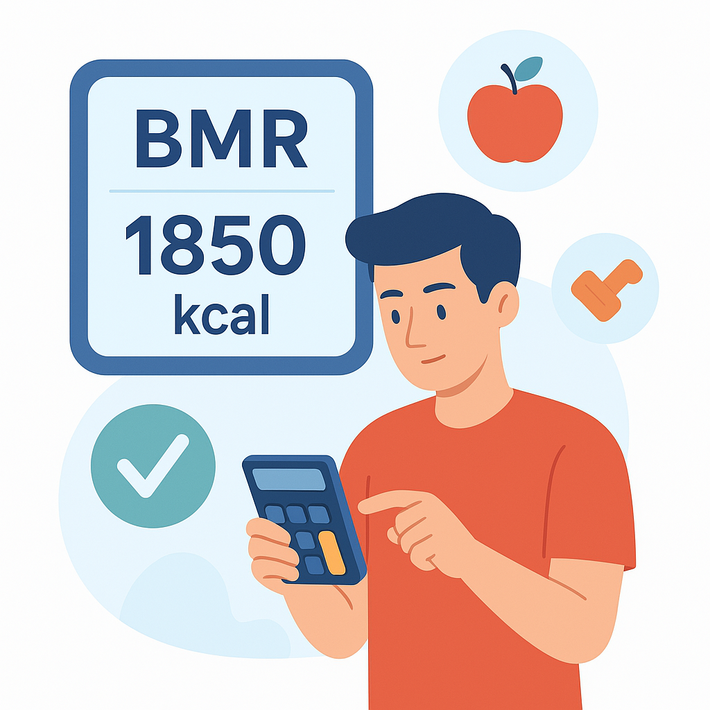

Your BMR Results
BMR: --
Calories to maintain weight: --
Calories for weight loss: --
Calories for weight gain: --

BMR: --
Calories to maintain weight: --
Calories for weight loss: --
Calories for weight gain: --